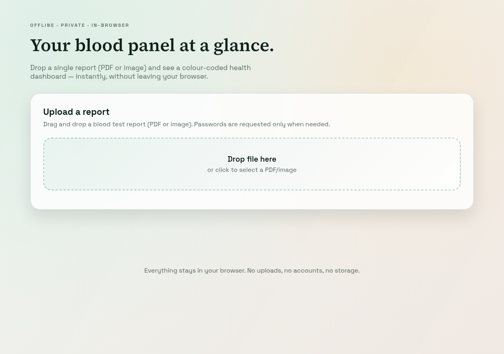
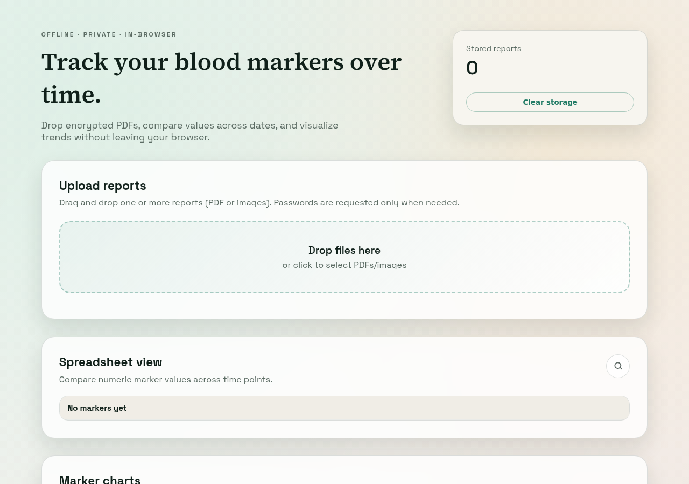
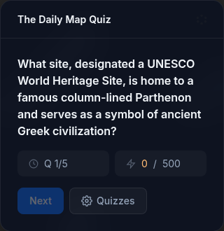
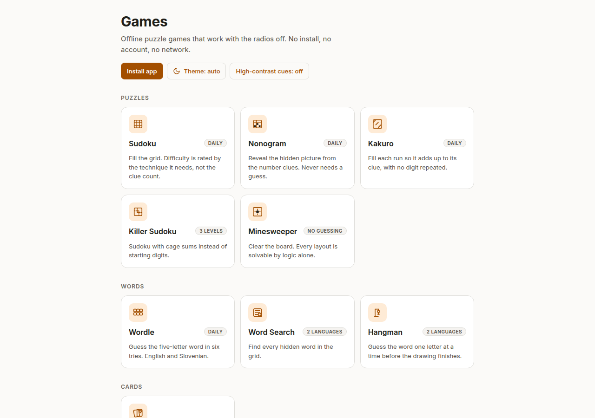
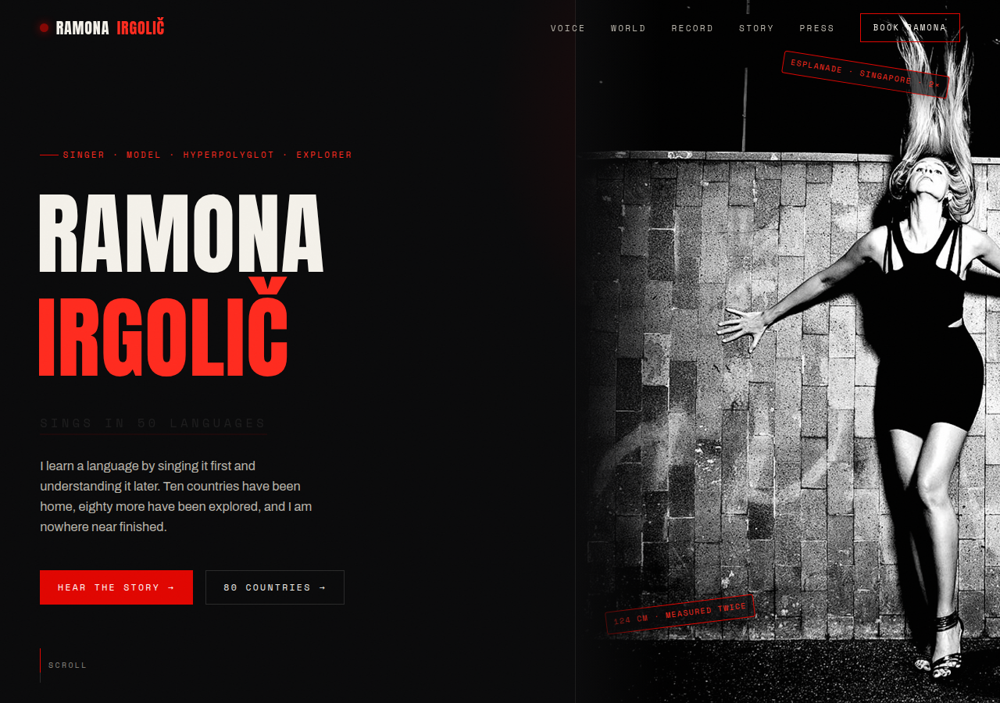
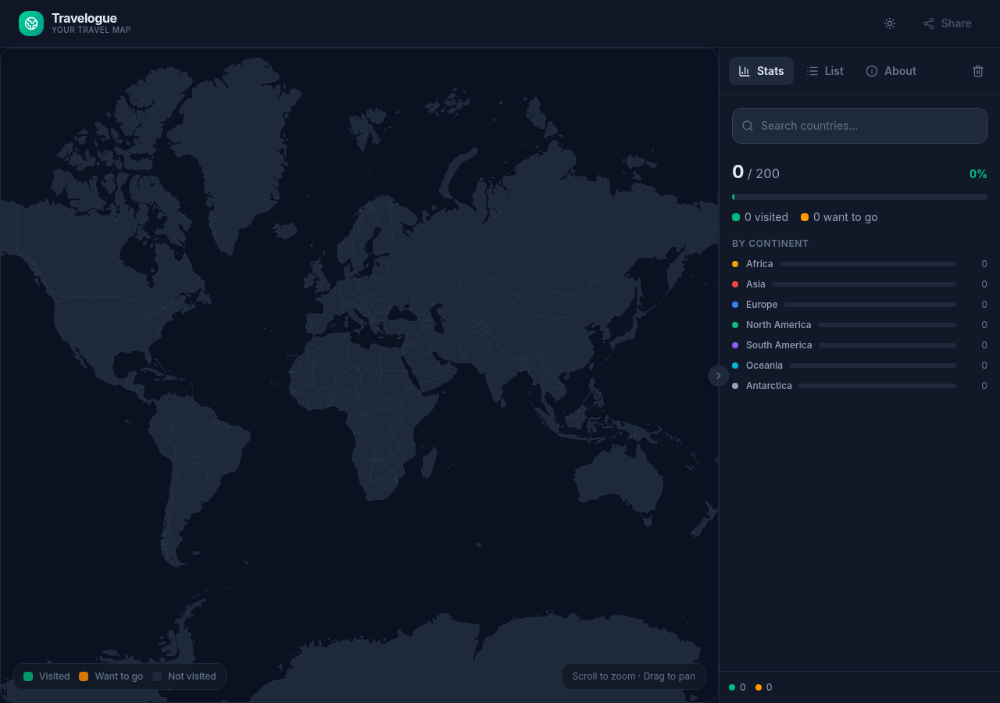
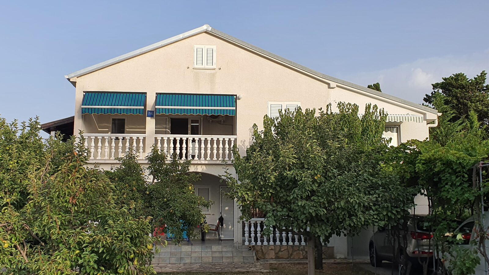

Health tool
Blood panel
A single-report dashboard for blood test results. Drop a PDF or image to see its markers at a glance.
Games, maps, websites, and small tools. Browse the collection.
GitHub
Health tool
A single-report dashboard for blood test results. Drop a PDF or image to see its markers at a glance.

Health tool
Compare blood markers across reports and dates. Import PDFs or images and follow trends in your browser.

Geography game
Find the answer on a world map. Geography questions, distance-based scoring, and a daily challenge.

Games
Sudoku, Nonogram, Minesweeper, Wordle, and more. An installable collection of puzzles that works offline.

Portfolio website
A portfolio for a singer, model, and traveller. Music, stories, photographs, and a life across languages.
Earlier design
Travel map
Mark the countries you’ve visited and the places you’d like to go. A personal scratch map in your browser.

Travel website
A website for Apartments Napros in Sabunike, Croatia. Explore the apartments, nearby beaches, and enquire directly about a stay.
In progress. A multiplayer Bomberman game.